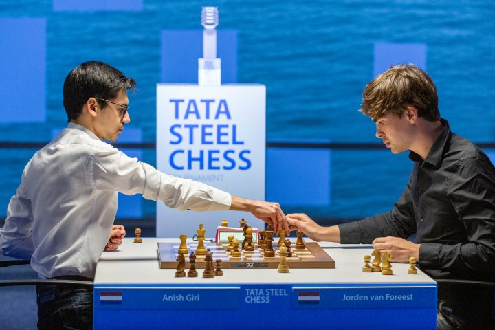

<!DOCTYPE html> 
<html lang="en" dir="ltr"></html>

<head>
  <meta charset="UTF-8">
  <link rel="stylesheet" href="style.css">
  <link rel="stylesheet" href="https://cdnjs.cloudflare.com/ajax/libs/font-awesome/5.15.2/css/all.min.css"/>
  <meta name="viewport" content="width=device-width, initial-scale=1.0">
  <meta http-equiv="X-UA-Compatible" content="ie=edge">
  <title>"History"</title>

  <nav>
    <div class="logo">Chess-I</div>
    <input type="checkbox" id="click">
    <label for="click" class="menu-btn">
      <i class="fas fa-bars"></i>
    </label>
   
    <ul>
      <li><a class="active" href="C:\Users\teigh\OneDrive\Desktop\Uni Website\History.html">History</a></li>
      <li><a href="C:\Users\teigh\OneDrive\Desktop\Uni Website\Homepage.html">Home</a></li>
      <li><a href="C:\Users\teigh\OneDrive\Desktop\Uni Website\Chess Game - source code\index.html">Play</a></li>
      <li><a href="C:\Users\teigh\OneDrive\Desktop\Uni Website\Gallery.html">Gallery</a></li>
      <li><a href="C:\Users\teigh\OneDrive\Desktop\Uni Website\Chess Clubs.html">Chess Clubs</a></li>
      <li><a href="C:\Users\teigh\OneDrive\Desktop\Uni Website\Touranments.html">Touranments</a></li>
      <li><a href="C:\Users\teigh\OneDrive\Desktop\Uni Website\About Us.html">About Us</a></li>
      <li><a href="C:\Users\teigh\OneDrive\Desktop\Uni Website\Ranking.html">Ranking</a></li>
      <ul>
  </nav>


<style>

h1 
{

  text-align: center;
}


</style>

</body>


  <script>

  </script>
</head>
<h1>History</h1>


  <body>
  
<p>The origins of chess are controversial, as in India the origins of chess is a gamee called Chaturanga, this was during the 7th century  between the years of 601 AD to 701 AD.
  It’s also suggested that China`s game of Xiangqi aka Chinese Chess which began in 569 AD.
 <br> In 1928, The World Chess Federation was established. (FIDE) <br>
  During this time efforts were made to make the chess federation international. A Chess Olympiad where teams of chess players representing their countries started in 1924
  However, Fide truly began to kick in in 1948 when the world champions for Woman, Juniors, Seniors and  Disabled was organised. 
  </p>

<div class="container">
   
   

  

</div> 


  
